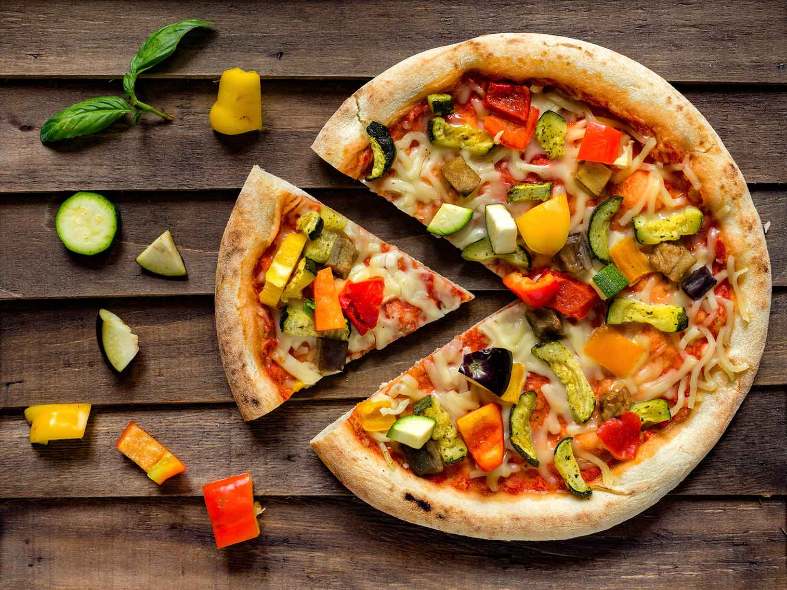

Fast-Food
Grill MénilmontantJe recommande ce restaurant où les plats sont préparés avec soin tant dans la qualité des aliments que dans la présentation. Les plats sont savoureux et présentés de façon très originale. Un restaurant 4 étoiles tant le personnel était à nos petits soins... Une pépite de restaurant à ne manquer sous aucun prétexte. La serveuse vous accompagne pendant tout le repas et n'a d'autre but que de savoir si vous vous sentez bien. |
|
Adresse: 101bis Rue de Ménilmontant, 75020 Paris Site Web: www.restaurant-turc-menilmontant.fr Contact: 06 33 92 46 34 |
|
Le WarnerLe Warner est un restaurant halal Américain situé dans le 20ème arrondissement de Paris, à quelques minutes du populaire quartier de Belleville.Dans une ambiance rétro vous plongeant dans l’Amérique des années 50, vous pourrez déguster entre amis ou en famille des spécialités Américaines faites maison et revisitées : Burgers, Hotdogs, Bagels et douceurs sucrées. |
|
Adresse: 36 Rue des Couronnes, 75020 Paris Site Web: www.thefork.fr/restaurant Contact: 01 82 07 01 40 |
|
Le Petit BristotLe Petit Bistrot vous propose une sélection de spécialités régionales et de plats traditionnels français, réalisés par nos chefs. Cuisine faite maison et bon rapport qualité prix. Ambiance chaleureuse et petite terrasse. Décoration rétro d'inspiration art nouveau. Le restaurant se trouve à proximité du Pavillon Carré de Baudoin qui propose des expositions de photos. |
|
Adresse: 108 Rue de Ménilmontant, 75020 Paris Site Web: www.facebook.com/ptitbistrotm Contact: 07 66 74 70 54 |
|
Les FarfadetsLes recettes sont travaillées avec amour et avec des produits de qualité ! Une adresse à connaître dans le quartier pour manger sur le pouce comme pour satisfaire des grosses fringales. Accueil très agréable et rapport qualité/prix très bon, qu'attendez vous de plus ? Très bon leurs sandwichs et leurs salades sont à tomber et on sent les produits frais qui sont préparées le jour même. Produits frais et de qualité, une équipe agréable, de la recherche, de la fraîcheur gustative qui fait la valeur ajouté de cet endroit pour y déjeuner. Si vous voulez manger un bon répas le midi ou de bonne pizza le vendredi, aller au farfadets vous ne saurais pas déçus. |
|
Adresse: 295 Rue des Pyrénées, 75020 Paris Site Web: www.lesfarfadetsparis.com Contact: 01 43 66 33 25 |
|
 Brasserie |
Pizzeria |
 Café & Bar |